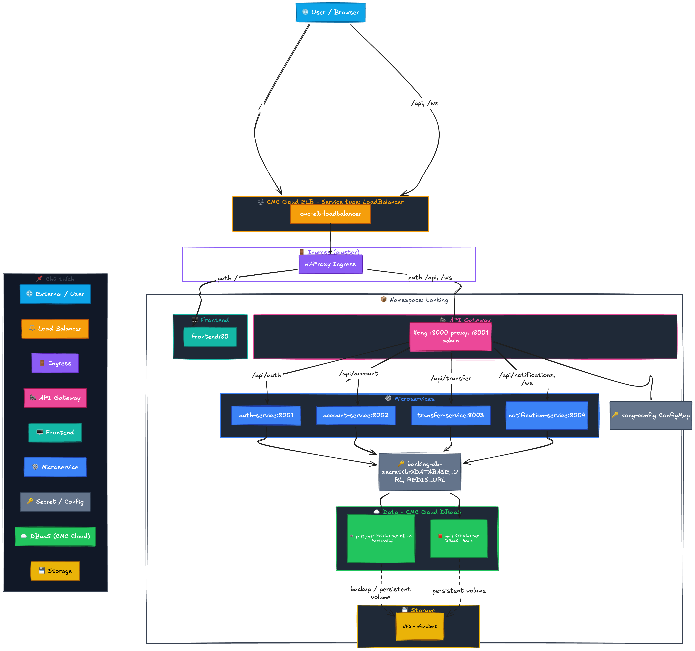
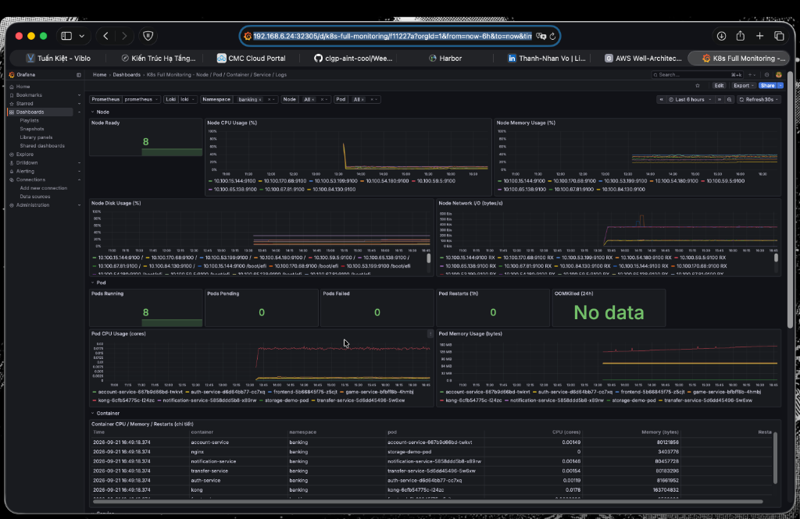

Triển Khai Hạ Tầng
Hệ Thống Banking Microservices
Chuyển đổi hạ tầng container từ Docker Compose sang Kubernetes (CMC Cloud HCM1), tích hợp Harbor Registry nội bộ, CI/CD Pipeline & Grafana Loki Log Aggregation.

Sơ Đồ Kiến Trúc Hạ Tầng K8S Cluster & Security Tiers
Mô hình phân tầng bảo mật và luồng truy cập qua Firewall, HAProxy Ingress (Service LoadBalancer) đến cụm K8S Worker Nodes:

Tường lửa lớp ngoài cùng lọc toàn bộ lưu lượng Internet, chỉ cho phép cổng HTTP/HTTPS đi qua và ngăn chặn các đợt tấn công thô.
Service type LoadBalancer (ELB) nhận IP Public, chuyển tiếp traffic qua HAProxy Ingress Controller để điều hướng thông minh vào cụm K8S NodePort.
Cụm Worker Nodes bảo mật chứa Kong API Gateway (Quản lý Auth/Rate Limit/Proxy-Cache), Frontend Pods và Backend Microservices trong namespace banking.
Phân Tích Chi Tiết Luồng Truy Cập Firewall → Ingress → Pods
Hành trình từng request từ người dùng bên ngoài vào đến microservices bên trong cụm K8S:
• Firewall Layer: Kiểm soát các dải IP và chặn DDOS lớp mạng.
• CMC Cloud ELB: Khởi tạo VIP (Virtual IP Public), phân tải đều sang các NodePort của HAProxy Ingress pods trên Worker Nodes.
• Đảm bảo điểm tiếp nhận không bị nghẽn đơn điểm.
• Lắng nghe các Ingress Rules trong K8S cluster.
• Giải mã TLS/SSL cert tập trung tại Ingress (SSL Termination).
• Route request theo Host Header & Path (ví dụ: /api/v1/* đến Kong API Gateway, /* đến Frontend).
• Communication giữa Kong Gateway và Backend hoàn toàn qua dải IP nội bộ (ClusterIP).
• Tự động Load Balance giữa các Replicas Pods bằng Kube-proxy / CNI Plugin.
• Cô lập hoàn toàn Backend khỏi Internet public.
Vai Trò & Kiến Trúc Kong API Gateway
Kong API Gateway đóng vai trò làm điểm kiểm soát tập trung (Centralized Control Point) cho toàn bộ API hệ thống:
• API Routing & Dynamic Upstreams: Tự động điều hướng các API route (`/auth`, `/account`, `/transfer`, `/game`) tới K8S Service tương ứng.
• Centralized Authentication: Xác thực JWT token/Session ID tại Gateway trước khi cho phép request đi sâu vào backend.
• WebSocket Proxying: Hỗ trợ kết nối WebSocket dài hạn (Notification Service).
• Triển khai theo mô hình DB-less (Declarative Configuration) giúp Kong khởi động siêu nhanh, cực kỳ nhẹ và không phụ thuộc vào Postgres riêng cho Kong.
• Toàn bộ cấu hình Route/Service/Plugin được lưu trong tệp Declarative YAML (_format_version: "3.0") nạp qua ConfigMap.
• Tối ưu cho môi trường Kubernetes Cloud Native.
Kong Plugins: Rate-Limiting & Proxy-Cache
Tối ưu hiệu năng và bảo vệ hạ tầng ngân hàng nhờ các Plugins chuyên dụng của Kong:
• Cơ chế: Giới hạn số lượng request tối đa một client/IP được phép gửi tới API trong khoảng thời gian (ví dụ: minute: 100).
• Lợi ích Ngân Hàng: Chống tấn công Bruteforce mật khẩu đăng nhập (`/auth/login`), ngăn cản bot spam giao dịch chuyển tiền (`/transfer`) làm cạn kiệt tài nguyên DB.
• Trả về HTTP 429 Too Many Requests ngay tại Gateway mà không tốn CPU của Backend.
• Cơ chế: Lưu đệm tạm thời (Cache In-Memory/Redis) các HTTP GET response đọc dữ liệu chung (ví dụ: danh sách lịch sử, tỷ giá, cấu hình game).
• Lợi ích Ngân Hàng: Giảm tới **80-90% tải truy vấn READ** xuống database PostgreSQL.
• Thời gian phản hồi API giảm từ **~50ms xuống <2ms** (giảm trễ cực sâu cho người dùng).
Tại Sao Dùng Kong Gateway Thay Vì Gọi Trực Tiếp ClusterIP?
So sánh kiến trúc truy cập API và cách Kong API Gateway phối hợp hoàn hảo với K8S ClusterIP trong dự án:
❌ Thiếu bảo mật tập trung: Mỗi microservice phải tự viết code xác thực JWT/Session ID, trùng lặp logic.
❌ Không có lớp chắn Rate Limit: Khi gặp traffic spike, toàn bộ request đập thẳng vào backend gây nghẽn DB.
❌ Tốn tài nguyên Backend: Request đọc (GET) lặp đi lặp lại vẫn phải xử lý qua code backend & query Postgres.
❌ Khó quản lý CORS & Routing: Frontend phải nhớ từng IP/Domain của từng Service rời rạc.
✅ Điểm quản lý API tập trung (Single Entrypoint): Mọi request vào cổng duy nhất, bảo mật tối đa.
✅ Gánh toàn bộ Cross-cutting Concerns: Kong tự động Auth, Log, Rate-limiting, Cors mà không cần sửa code Backend.
✅ Proxy-Cache siêu tốc: Trả kết quả ngay tại Gateway cho các request trùng lặp.
✅ Backend hoàn toàn Stateless: Backend chỉ tập trung đúng nghiệp vụ logic ngân hàng (Business Logic).
account-service.banking.svc.cluster.local:8001). Backend được bảo vệ hoàn toàn bên trong dải mạng nội bộ!
Giám Sát Hệ Thống: CMC Monitoring & Grafana Loki Log
Kết hợp dịch vụ CMC-Monitoring có sẵn với Grafana Loki tự cài đặt để theo dõi toàn diện Request/Response & Metrics:

• Tận dụng hệ thống Prometheus exporter có sẵn của CMC Cloud.
• Giám sát CPU/RAM usage của Node (NodeReady, Network I/O) & từng Pod (account-service, auth-service, kong).
• Theo dõi số lượng Pod restarts và sự cố OOMKilled tức thời.
• Triển khai cụm Loki + Promtail DaemonSet tự động gom toàn bộ stdout/stderr logs từ các container.
• Xử lý Request/Response: Truy vết chuỗi giao dịch chuyển tiền, mã lỗi HTTP status (4xx/5xx) & chi tiết payload logs.
• Tích hợp trực tiếp làm Data Source chính chủ trên Grafana Dashboard (NodePort 32305).
Đánh Giá Tính Khả Dụng Cao (High Availability - HA)
Phân tích khả năng chịu lỗi và tính sẵn sàng của từng thành phần trong hạ tầng hiện tại:
| Thành Phần Hạ Tầng | Trạng Thái HA Hiện Tại | Cơ Chế Đảm Bảo Khả Dụng | Đánh Giá & Hướng Nâng Cấp |
|---|---|---|---|
| Ingress & ELB Layer | ĐẠT HA | CMC Cloud ELB chạy đa máy chủ Load Balancing; HAProxy Ingress deployed dạng Replica Set. | Tránh nghẽn cổng vào, sẵn sàng nhận lưu lượng cao. |
| K8S Worker Nodes | ĐẠT HA | Cụm Node Group đa máy chủ vật lý/VMs trên CMC Cloud. Tự động reschedule Pods khi Node chết. | Đảm bảo cụm compute luôn sẵn sàng. |
| Frontend & Backend Pods | ĐẠT HA | Stateless design, cấu hình replicas >= 2 kết hợp Rolling Update & Liveness/Readiness Probes. |
Tự khôi phục ngay lập tức nếu 1 Pod crash. |
| Database Layer (DBaaS) | ĐẠT HA | Sử dụng Managed CMC DBaaS PostgreSQL & Redis hỗ trợ Auto Backup & High Availability Master-Replica. | Dữ liệu được bảo vệ an toàn, không rủi ro mất mát. |
Đối Chiếu Với AWS Well-Architected Framework
Đánh giá hạ tầng hiện tại dựa trên 6 trụ cột tiêu chuẩn kiến trúc điện toán đám mây:
ĐẠT 85%
• Phân tầng mạng cô lập qua Firewall & DMZ.
• Secret không lưu hardcode, quản lý bằng K8S Secrets.
• Harbor Registry có vulnerability scanning.
Cần làm thêm: Bật mTLS giữa các microservices.
ĐẠT 90%
• Self-healing Pods tự khôi phục.
• DBaaS managed có backup tự động.
• HAProxy Ingress & ELB phân tải đa luồng.
ĐẠT 85%
• Caching layer bằng Redis DBaaS & Kong Proxy-cache.
• Resource requests/limits tối ưu.
• Kong API Gateway định tuyến siêu tốc.
ĐẠT 90%
• Quản lý hạ tầng bằng Manifests & Secrets K8S.
• Prometheus + Grafana Loki Log Tracing.
• Quy trình CI/CD đóng gói tự động.
ĐẠT 90%
• Dùng Harbor nội bộ tiết kiệm Data Egress.
• Dùng DBaaS thay vì tự duy trì EC2/VMs rời.
• Tối ưu dung lượng Pod requests/limits.
ĐẠT 80%
• Tận dụng năng lực ảo hóa tối đa trên CMC Cloud.
• Tự động thu hồi tài nguyên Pod dư thừa.
Các Tiêu Chí & Nhiệm Vụ Đã Triển Khai thành công
Hoàn thành đầy đủ 5 tiêu chí cốt lõi trong kế hoạch triển khai CaaS trên CMC Cloud:
| Ngày / Hạng Mục | Nội Dung Chi Tiết | Kết Quả Thực Hiện |
|---|---|---|
| Ngày 1: Container & Image | Đóng gói Dockerfile multi-stage, tag & push image lên Registry. | Thành công Image tối ưu, tương thích Linux AMD64. |
| Ngày 2: K8S Cluster & Access | Tạo SSH Key Pair, Cluster K8S & Node Group trên CMC Cloud, dùng Bastion Host kết nối kubectl. |
Thành công Node ở trạng thái Ready, bảo mật SSH Key. |
| Ngày 3: Workload & Service | Tạo Namespace banking, triển khai YAML, Expose Service NodePort/Ingress, scale & rollback. |
Thành công Rollout zero-downtime, tự động scale Pods. |
| Ngày 4: Resource & Storage | Cấu hình Requests/Limits. Chuyển database container sang CMC DBaaS để duy trì dữ liệu bền vững. | Thành công Tối ưu tài nguyên, DBaaS ổn định. |
| Ngày 5: Web App Deploy | Tích hợp Game-service, đẩy image lên Harbor & deploy Kubernetes cluster. | Thành công Self-healing OK, Frontend gọi được Backend. |
Các Vấn Đề Gặp Phải & Giải Pháp Khắc Phục
Tổng hợp các sự cố thực tế trong quá trình triển khai K8S và cách xử lý triệt để:
Hiện tượng: Build image trên Mac M1/M2/M3 (ARM64), khi Worker Node Ubuntu (AMD64) pull về báo lỗi
exec format error.Giải pháp: Sử dụng
docker buildx --platform linux/amd64 hoặc cấu hình CI/CD Runner chạy trên host Linux cùng subnet.
Hiện tượng: Kong báo lỗi
unknown field apiVersion/kind khi parse kong.yml do truyền sai định dạng K8S Manifest vào Kong Controller.Giải pháp: Tách riêng tệp DB-less declarative format (chứa
_format_version: "3.0") và ConfigMap K8S.
Hiện tượng: Worker node từ chối pull image từ Harbor do Self-Signed Certificate hoặc thiếu cấu hình HTTPS TLS domain.
Giải pháp: Cấp SSL Cert (Elliptic Curve Key / Let's Encrypt DNS-01) cho
harbor.cmc-cloud-hcm1.cloud.
Hiện tượng: GitHub hosted runner không thể kết nối tới Harbor Registry trong VPC mạng nội bộ.
Giải pháp: Chuyển sang
runs-on: self-hosted nằm cùng subnet với Harbor registry.
Hạ Tầng Harbor Private Registry Bảo Mật
Giải pháp quản lý và lưu trữ container image nội bộ tập trung trên CMC Cloud HCM1:
• Đặt hoàn toàn trong mạng VPC nội bộ, loại bỏ hoàn toàn nguy cơ rò rỉ mã nguồn ra Internet.
• CVE Gatekeeping: Quét tự động lỗ hổng bảo mật (Trivy/Clair). Tự động chặn lệnh docker pull nếu phát hiện lỗi High/Critical.
• Image Signing: Tích hợp Notary/Cosign ký số container image, ngăn chặn mã độc chèn vào Supply Chain.
• Cấu hình HTTPS TLS với Elliptic Curve Key (EC prime256v1) giúp tăng tốc độ handshake, dung lượng key nhỏ nhẹ và an toàn.
• Tích hợp Let's Encrypt qua DNS-01 Challenge (Cloudflare solver) cấp cert tự động mà không cần mở port 80/443 ra Internet.
• Đảm bảo toàn bộ K8S Worker Nodes pull image qua kết nối mã hóa tin cậy.
• Không bị Rate Limit: Loại bỏ triệt để rủi ro nghẽn pipeline khi pull image từ Docker Hub public.
• Tốc độ vượt trội: Kéo image qua mạng LAN / VPC Peering nội bộ nhanh gấp 10 lần.
• Tối ưu chi phí Egress: Tiết kiệm chi phí băng thông mạng ra ngoài của CMC Cloud.
Quy Trình Tự Động Hóa CI/CD Pipeline
Quy trình từ lúc developer push code đến khi đóng gói và phát hành image lên Harbor Registry:
• Thay vì dùng Public GitHub Hosted Runner (không kết nối được vào mạng nội bộ), hệ thống triển khai Self-Hosted Runner (runs-on: self-hosted) trên một VM cùng Subnet VPC.
• Runner kết nối an toàn với Harbor Registry mà không cần phơi cổng ra ngoài Internet.
• Tích hợp SSH Keypair và IAM RBAC bảo mật cao cho từng môi trường (Dev/Staging/Prod).
1. Code Trigger: Developer push code mới lên nhánh `main` hoặc tạo Tag release.
2. Build Image: Tự động gọi docker buildx --platform linux/amd64 chuẩn hóa kiến trúc cho cụm Worker Nodes Ubuntu.
3. Security Scan: Quét lỗ hổng image trực tiếp trước khi push.
4. Registry Push: Tag & Push image về harbor.cmc-cloud-hcm1.cloud/banking/[service]:[tag].
5. Cluster Deploy: Kích hoạt kubectl rollout restart cập nhật Pods trong K8S.
Kết Luận & Hướng Phát Triển Tiếp Theo
Hệ thống Banking Microservices đã vận hành ổn định trên cụm Kubernetes CMC Cloud HCM1:
• Chuyển đổi thành công 100% workloads sang K8S.
• Tích hợp Harbor Private Registry & Self-hosted CI/CD.
• Kong API Gateway & Grafana Loki Log Monitoring.
• Đáp ứng chuẩn hạ tầng HA & Well-Architected.
• CMC-Monitoring kết hợp Grafana Dashboard (32305).
• Log aggregation & Request/Response tracing qua Loki.
• Cấu hình Auto-scaling KEDA dựa theo Queue size & RPS.
• Triển khai GitOps với ArgoCD để tự động hóa Sync code từ GitLab.
CẢM ƠN THẦY VÀ CÁC BẠN ĐÃ LẮNG NGHE!
Q&A / Thảo luận & Trình diễn Demo trực tiếp